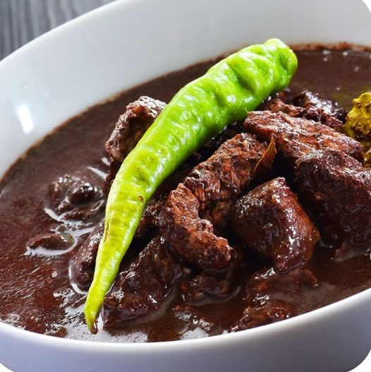

Pork Dinuguan

Pork Dinuguan is a type of stew native to the Philippines
It is peculiar when compared to other types of stews because of the use of pork blood as the main ingredient.
Before I move on, let me say that this is one of the dishes that I enjoy eating. It might seem different to those who are not familiar with it yet, but your impression can change in a good way after trying it.
This easy dinuguan recipe is intended for beginner and intermediate cooks. I will introduce the basic ingredients that you can use to be able to a cook a great tasting dinuguan at home.
Ingredients
Instructions
- Heat oil in a cooking pot
- Saute onion for 30 seconds. Add garlic. Continue to cook until onion softens.
- Add pork. Saute for 3 to 5 minutes.
- Pour water. Let boi. Add bay leaves and vinegar. Let the liquid re-boil.
- Add Knorr Pork Cube. Stir. Cover and simmer for 1 hour. Note: add water as needed.
- Add long green peppers and pour pork blood into the pot. Stir. Continue to cook between low to medium heat for 15 minutes while stirring every 3 minutes.
- Add sugar and season with salt and ground black pepper.
- Transfer to a serving bowl. Enjoy.